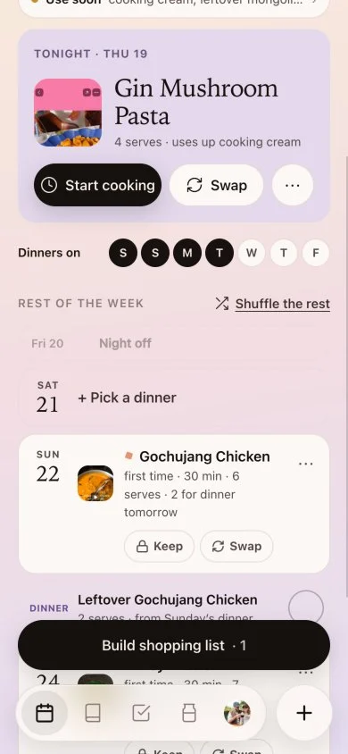
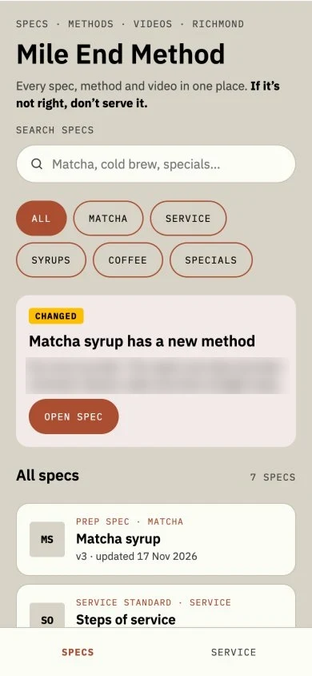
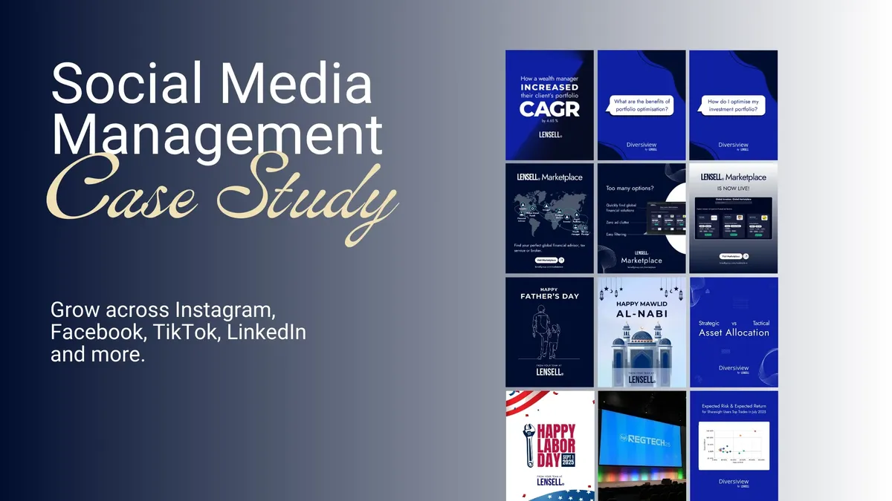
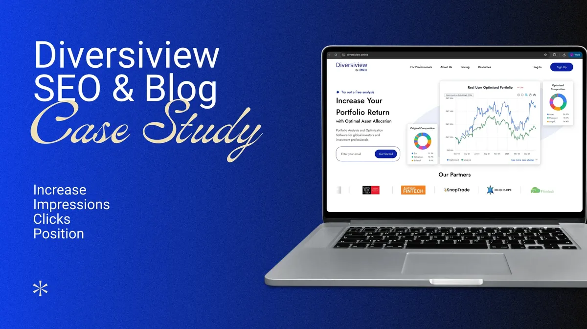
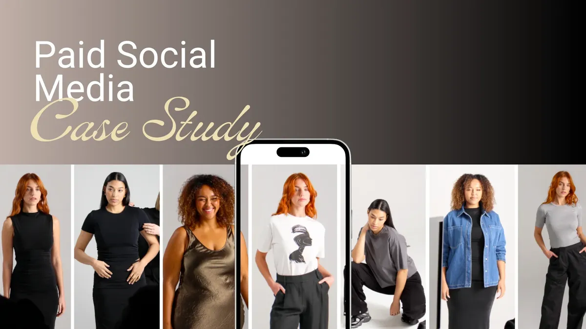
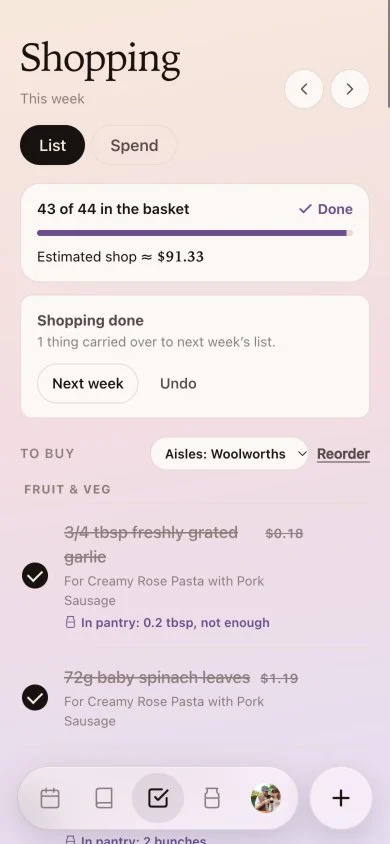
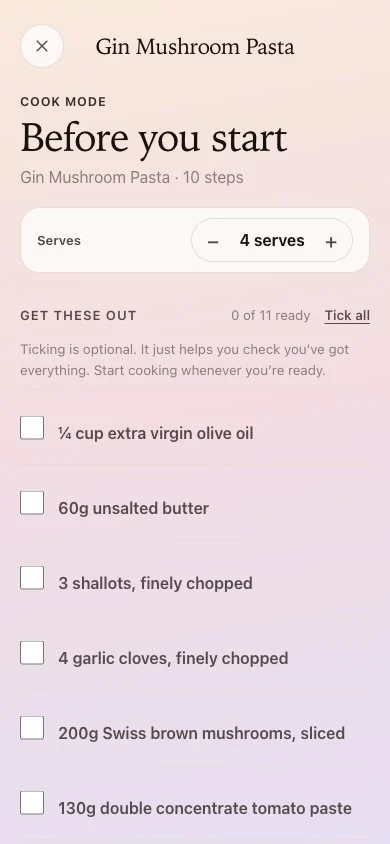
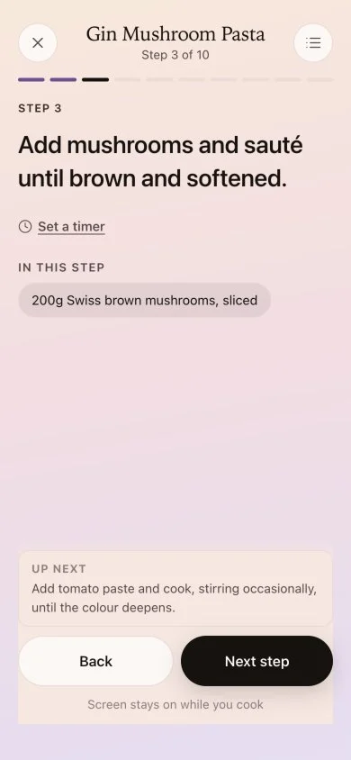
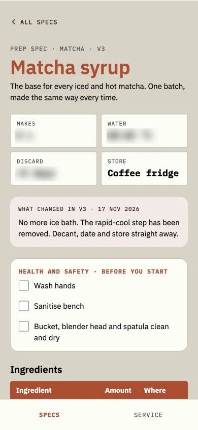
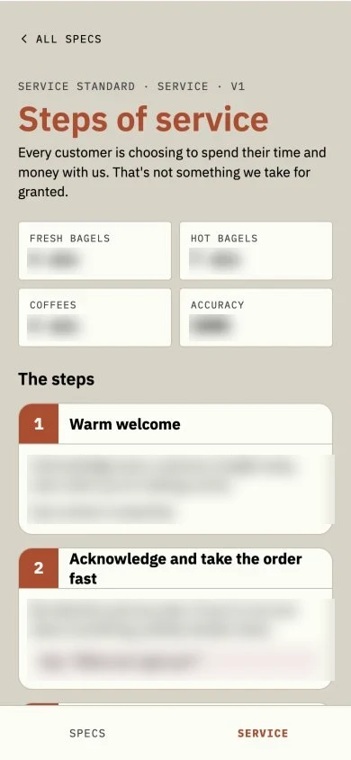

Spagbol
JRJoel Robinson, new release
Spagbol, out now
A meal and grocery planner I designed, built, branded and launched solo. Over 300 recipes added in the first week, plus 1,900+ views across Instagram and TikTok.
Marketer, operator, manager. I build the systems teams run on, and the content that brings people through the door.
Produced in Melbourne. Recorded live at Mile End Bagels, Moon Cruller and Lune. Digital sessions at LENSELL Group. Mastered at Swinburne (Bachelor of Business, Marketing) and Abbey Road Institute (Diploma of Music Production and Sound Engineering).
Press play on anything. Every track leads with its result.
A meal and grocery planner I designed, built, branded and launched solo. Over 300 recipes added in the first week, plus 1,900+ views across Instagram and TikTok.

SpagbolProduct and social300+recipes, week one Price estimates and spendSpagbol, pricing and data$25a dinner
Price estimates and spendSpagbol, pricing and data$25a dinner Cook modeSpagbol, UX169Reel views
Cook modeSpagbol, UX169Reel views
Mile End MethodOperations$0to run
LENSELL social mediaSocial media1,607per post
Diversiview SEO and blogSEO+54%impressions
Pruijn paid socialPaid social+333%profile visits Video killed the radio starResearch2.7%Reels target
Video killed the radio starResearch2.7%Reels target
Every week starts with the same question: what are we eating, and what do we need to buy? Most meal apps answer with AI recipes nobody in the house has cooked. Spagbol starts from the dinners a household already loves, plans the week from them and writes one shopping list. I designed, built, branded and launched it on my own.


Screens from the live app in light mode: my own household's week. Swipe for more on a phone.
The idea is a household's greatest hits on rotation, positioned against AI recipe apps. I built the identity around it: a block-print mark of shuffled pieces, a sunrise gradient with sharp black and cream buttons, and a voice that sounds like the household talking ("Same again this week?").
Figures from the Spagbol Instagram and TikTok accounts, 19 November 2026.
The shopping list's estimate and the Spend tab, from my own household's shops.
A week of dinners has a price, and most meal planners ignore it. Spagbol shows it before the shop, with an estimate on the list, and after it, with a record of what was spent and where.
It ties the app to the weekly grocery budget, which gives people a reason to open it every week, and it builds a price dataset that grows with every receipt scanned.


Cook mode in light mode, on a recipe from my own collection.
Recipes saved from social media are written as captions, not methods. Cook mode turns any of them into a calm, one-step-at-a-time screen you can follow with messy hands.
Cook mode launched as a feature-drop Reel on Instagram ("Cook mode: your greatest hits, one step at a time"), which reached 169 views.


Screens from the working prototype. Quantities and targets are blurred.
At Mile End Bagels the same drink could come out differently depending on who made it. Prep methods lived in people's heads, group chats and printed sheets that went out of date, and training meant pulling a supervisor off the floor. I designed and built one place for every prep spec, method and training video.
Publishing a change is tied to sign-off. A new version can't go live without a plain-English note on what changed, and it resets sign-off, so managers can see exactly who still needs to re-read it.

LENSELL, an investment analytics brand, wanted more awareness, more community engagement and more traffic to its blogs and product pages, in a niche financial space that is hard to grow.
Diversiview had little organic traffic for high-value investment keywords, which limited its reach to investors looking for portfolio optimisation tools.

Pruijn, a contemporary fashion brand, wanted more profile visits, followers and engagement from a limited ad budget.

A planning guide for Reels and TikTok that sets realistic targets before a single video is shot. I first wrote it in September 2025 and updated it in November 2026 against the latest published benchmarks.
| Metric | Benchmark | Source |
|---|---|---|
| Australians on social media | 22.6M, 82.8% of the population (Oct 2026) | DataReportal |
| Reels engagement, by views | 2.7%, nearly double carousels (Jul–Dec 2025, 3,363 brands) | Dash Social |
| Instagram engagement, by followers | Carousels 0.55%, Reels 0.52%, images 0.37% (2025) | Socialinsider |
| TikTok conversion ads | 0.61% CTR, 1.92% conversion rate, $4.80 CPM | Lebesgue |
| Consumer preference | 63% would most like to learn about a product from a short video | Wyzowl 2026 |
I'm open to marketing, business, operations, creative and admin roles in Melbourne.
joel.robinson.melb@gmail.com